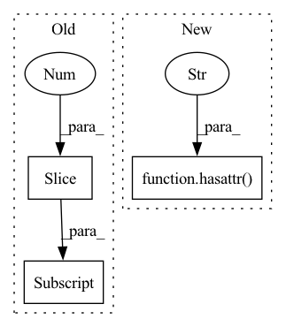

Pattern ID :17042

Before Change
S[:,0,1], S[:,0,2] = -v[:,2], v[:,1]
S[:,1,0], S[:,1,2] = v[:,2], -v[:,0]
S[:,2,0], S[:,2,1] = -v[:,1], v[:,0]
return S.view(shape[:-1]+(3,3))
def cumops_(input, dim, ops):
After Change
[ 2.2059, 0.0000, 0.2929],
[ 1.2761, -0.2929, 0.0000]]])
v = input.tensor() if hasattr(input, "ltype") else input
assert v.shape[-1] == 3, "Last dim should be 3"
O = torch.zeros(v.shape[:-1], device=v.device, dtype=v.dtype, requires_grad=v.requires_grad)
return torch.stack([torch.stack([ O, -v[:,2], v[:,1]], dim=-1),
In pattern: SUPERPATTERN
Frequency: 3
Non-data size: 3
Instances
Fragment ID: 57168040
Project Name: pypose/pypose
Commit Name: b99366ff08a6f114feec3211f2bd893fd6c1824e
Time: 2022-05-03
Author: jeffsan@gmx.com
File Name: pypose/lietensor/basics.py
M Class Name: AnonimousClass
N Class Name: AnonimousClass
M Method Name: vec2skew(1)
N Method Name: vec2skew(1)
M Parent Class:
N Parent Class:
M File Name: pypose/lietensor/basics.py
N File Name: pypose/lietensor/basics.py
M Start Line: 35
M End Line: 40
N Start Line: 34
N End Line: 39
'>
Before Change
def __init__(self, args):
super(NodeClassificationAC, self).__init__(args)
self.args = args
self.model_name = args.model[0:-3]
print(self.model_name)
self.device = args.device
After Change
def __init__(self, args):
super(NodeClassificationAC, self).__init__(args)
if hasattr(args, "metric"):
self.metric = args.metric
else:
self.metric = "f1"
'>
Fragment ID: 57168036
Project Name: bupt-gamma/openhgnn
Commit Name: 52ccb6b8a0bc096c7838b1d47eb755d85b54ef83
Time: 2021-09-12
Author: 75086617+dddg617@users.noreply.github.com
File Name: openhgnn/trainerflow/node_classification_ac.py
M Class Name: NodeClassificationAC
N Class Name: NodeClassificationAC
M Method Name: __init__(2)
N Method Name: __init__(2)
M Parent Class: BaseFlow
N Parent Class: BaseFlow
M File Name: openhgnn/trainerflow/node_classification_ac.py
N File Name: openhgnn/trainerflow/node_classification_ac.py
M Start Line: 30
M End Line: 82
N Start Line: 32
N End Line: 77
'>
Before Change
return loaded_state_dict
def warm_up(self, input_shape: Sequence[int], *args, **kwargs):
step_shape = (*input_shape[:2], *input_shape[3:])
return self.module.warm_up(step_shape)
After Change
def warm_up(self, input_shape: Sequence[int], *args, **kwargs):
for m in self.modules.modules():
if hasattr(m, "state_index"):
m.state_index = 0
'>
Fragment ID: 57168038
Project Name: lukashedegaard/co3d
Commit Name: 43c5e2ada5a070ff044ee32ef05b46e5a3e992c7
Time: 2021-09-22
Author: lh@eng.au.dk
File Name: models/cox3d/main.py
M Class Name: CoX3DRide
N Class Name: CoX3DRide
M Method Name: warm_up(2)
N Method Name: warm_up(2)
M Parent Class: ActionRecognitionDatasets,TopKAccuracyMetric(1, 3, 5),RideModule,SgdCyclicLrOptimizer
N Parent Class: ActionRecognitionDatasets,TopKAccuracyMetric(1, 3, 5),RideModule,SgdCyclicLrOptimizer
M File Name: models/cox3d/main.py
N File Name: models/cox3d/main.py
M Start Line: 274
M End Line: 275
N Start Line: 274
N End Line: 278